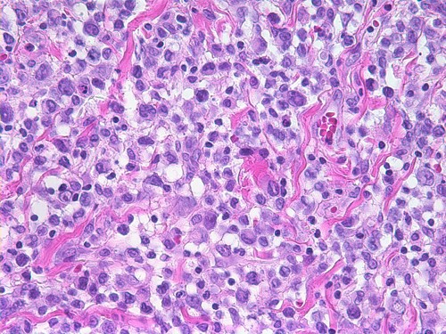
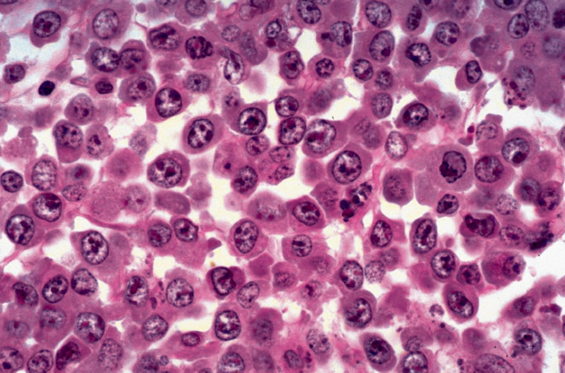

Patient
- A 45 year-old woman with groin discomfort
Clinical History
- Lima-bean size mass in the right groin for 3 months
- Fever
- No weight loss
Family History
- None
Patrick Rock, Raafae Ismail
| test | value |
|---|---|
| WBC | 15.7 |
| RBC | 4.19 |
| HGB | 11.3 |
| HCT | 34.3 |
| MCV | 82 |
| MCH | 26.9 |
| MCHC | 32.8 |
| PLT | 255 |
| RDW-CV | 15.8 |
-WBC is high -HGB is low
| wbc differential | percent | concentration |
|---|---|---|
| Neutrophils | 80 | 12.6 |
| Bands | 0 | 0 |
| Lymphocytes | 13 | 2.0 |
| Monocytes | 7 | 1.1 |
| Eosinophils | 0 | 0 |
| Basophils | 0 | 0 |
Pelvic mass showing large cells in cohesive clusters.

Lymph node showing large cells with ample amount of cytoplasm and visible nucleoli.

These tumors usually express CD30.
"Immunophenotypically, most neoplastic lymphocytes have a unique CD4+, CD8-, and cytotoxic T-cell phenotype (TIA-1 and granzyme B+), with variable loss of pan–T-cell antigens (eg, CD2, CD3, CD5)." -medscape
Which of the following markers is suggestive of ALCL?
Nuclei are deformed
Horseshoe cells are hallmark for ALCL
Slides available at http://patrickjrock.com/ALCL/slides.pdf